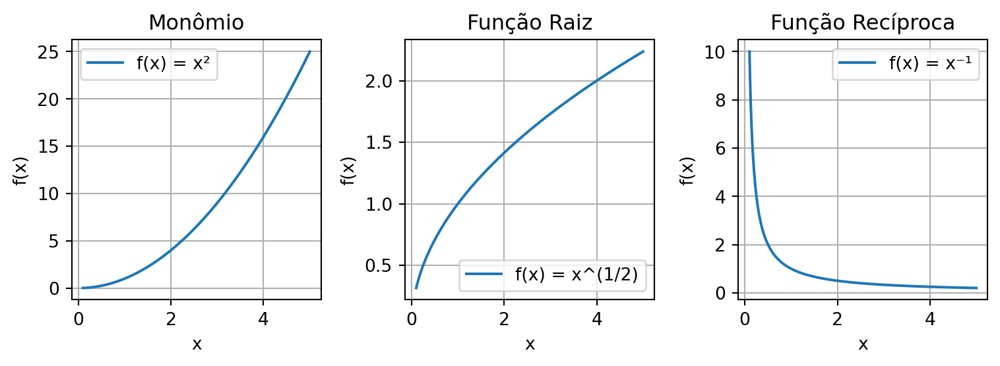
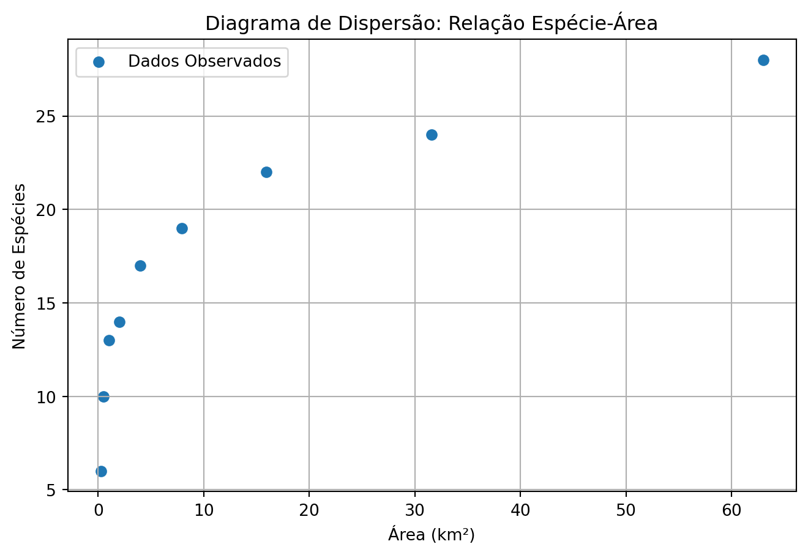
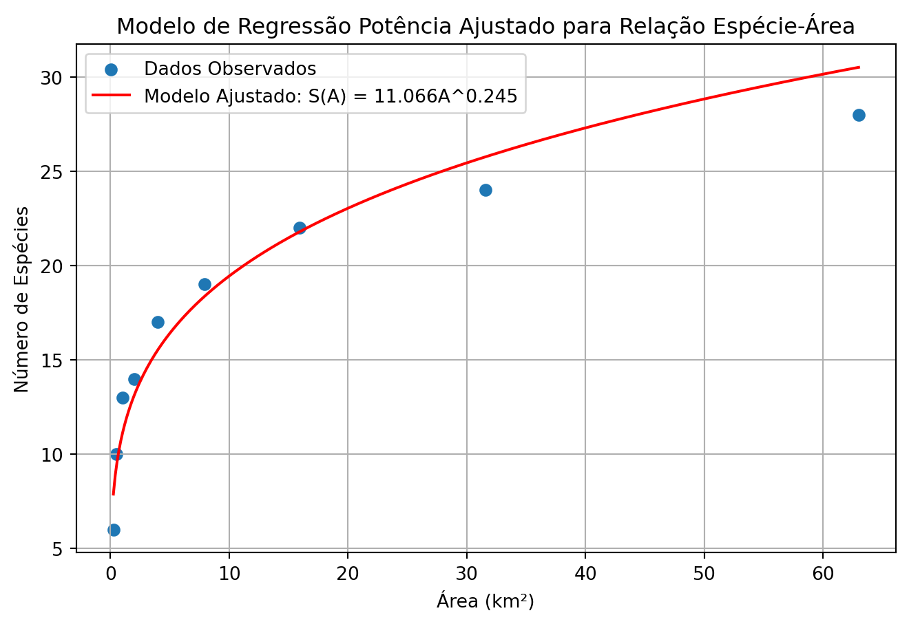

import numpy as np
import matplotlib.pyplot as plt
import pandas as pdExplorando Funções Potências com Python
1 Pacotes e bibliotecas
2 Definição e Tipos de Funções Potências
Uma função potência é definida como uma função da forma \(f(x) = x^k\), em que \(k\) é uma constante.
O valor da constante \(k\) determina a classificação da função potência:
- Monômio: para \(k = n\), onde \(n\) é um inteiro positivo. Exemplos - \(f(x) = x^2\) ou \(f(x) = x^3\).
- Função raiz: para \(k = 1/n\), onde \(n\) é um inteiro positivo. Exemplos - \(f(x) = x^{1/2}\) (raiz quadrada) ou \(f(x) = x^{1/3}\) (raiz cúbica).
- Função recíproca: para \(k = -1\). Ou seja, \(f(x) = x^{-1} = 1/x\).
2.1 Definindo e visualizando funções potência em Python
Vamos usar o Python para definir e plotar exemplos de cada tipo de função potência. Isso nos ajudará a entender suas características visuais.
# Definindo a função potência em Python
def potencia(x, n):
"""Função potência: f(x) = x^k."""
return x**nUtilizando a função criada.
# Gerando um intervalo de valores para x para plotagem
# Começamos de 0.1 para evitar divisão por zero na função recíproca.
x_values = np.linspace(0.1, 5, 400)
# x_values# Gerando valores de y
y_values = potencia(x_values, 2)
# y_values# Criando três gráficos lado a lado com diferentes valores de k
# Criando os subplots
fig, (ax1, ax2, ax3) = plt.subplots(1, 3, figsize=(8, 3))
# Primeiro gráfico: f(x) = x²
ax1.plot(x_values, potencia(x_values, 2), label='f(x) = x²')
ax1.set_title('Monômio')
ax1.set_xlabel('x')
ax1.set_ylabel('f(x)')
ax1.legend()
ax1.grid(True)
# Segundo gráfico: f(x) = x^(1/2)
ax2.plot(x_values, potencia(x_values, 1/2), label='f(x) = x^(1/2)')
ax2.set_title('Função Raiz')
ax2.set_xlabel('x')
ax2.set_ylabel('f(x)')
ax2.legend()
ax2.grid(True)
# Terceiro gráfico: f(x) = x⁻¹
ax3.plot(x_values, potencia(x_values, -1), label='f(x) = x⁻¹')
ax3.set_title('Função Recíproca')
ax3.set_xlabel('x')
ax3.set_ylabel('f(x)')
ax3.legend()
ax3.grid(True)
# Ajustando o layout e salvando a figura
plt.tight_layout()
plt.show()
3 Exemplo da Relação Espécie-Área
A função potência é amplamente utilizada em ecologia para modelar fenômenos no mundo real. Um exemplo é a relação entre o número de espécies (\(S\)) e a área de uma região (\(A\)). A relação entre \(S\) e \(A\) é geralmente modelada por:
\[S(A) = cA^k\]
Em que \(c\) e \(k\) são coeficientes que precisam ser determinados a partir de dados observados.
Considere a tabela de dados que mostra valores de área (A) e riqueza de espécies (S):
| Observação | 1 | 2 | 3 | 4 | 5 | 6 | 7 | 8 | 9 |
|---|---|---|---|---|---|---|---|---|---|
| A (km²) | 0,25 | 0,5 | 1 | 2 | 4 | 7,9 | 15,9 | 31,6 | 63 |
| S | 6 | 10 | 13 | 14 | 17 | 19 | 22 | 24 | 28 |
Podemos observar essa relação em Python da seguinte forma:
3.1 Definindo a tabela de dados
# Dados da tabela
data = {
'A': [0.25, 0.5, 1, 2, 4, 7.9, 15.9, 31.6, 63],
'S': [6, 10, 13, 14, 17, 19, 22, 24, 28]
}
df = pd.DataFrame(data)3.2 Visualizando o gráfico de dispersão
plt.figure(figsize=(8, 5))
plt.scatter(df['A'], df['S'], label='Dados Observados')
plt.title('Diagrama de Dispersão: Relação Espécie-Área')
plt.xlabel('Área (km²)')
plt.ylabel('Número de Espécies')
plt.grid(True)
plt.legend()
plt.show()
4 Método dos Mínimos Quadrados (MMQ) para o Modelo de Regressão Potência
Podemos utilizar o MMQ para encontrar os coeficientes da relação de potência. Para isso, precisamos antes linearizar a relação, aplicando o logaritmo em ambos os lados da equação.
ImportanteLinearizando a relação potência
Comece com a equação original: \[S = cA^k\]
Aplique o logaritmo (de qualquer base) nos dois lados: \[\log(S) = \log(cA^k)\]
Use a propriedade do logaritmo do produto \(\log(xy) = \log(x) + \log(y)\): \[\log(S) = \log(c) + \log(A^k)\]
Use a propriedade do logaritmo da potência \(\log(x^p) = p\log(x)\): \[\log(S) = \log(c) + k\log(A)\]
Ao final, obtemos uma equação linear na forma \(y = a + bx\), onde:
- \(y = \log(S)\)
- \(x = \log(A)\)
- O coeficiente angular é \(b = k\)
- O intercepto linear (onde a reta cruza o eixo y) é \(a = \log(c)\)
Após a linearização, os vetores \(\vec{f}_0\), \(\vec{f}_1\) e \(\vec{y}\), são definidos como segue:
\[\vec{f}_0 = \begin{bmatrix} 1 \\ 1 \\ \vdots \\ 1 \end{bmatrix} \quad \text{,} \quad \vec{f}_1 = \begin{bmatrix} \log(x_1) \\ \log(x_2) \\ \vdots \\ \log(x_n) \end{bmatrix} \quad \text{e} \quad \vec{y} = \begin{bmatrix} \log(y_1) \\ \log(y_2) \\ \vdots \\ \log(y_n) \end{bmatrix}\]
A partir daí, definimos as matrizes \(X\) e \(Y\) como no modelo linear simples e seguimos com as mesmas operações matriciais.
Vamos criar uma função em Python que implementa o MMQ:
ImportanteFunção em Python para MMQ
def mmq(x, y):
"""
Calcula os coeficientes (B) e o R² de uma regressão linear simples.
Args:
x (list ou np.ndarray): Os valores da variável independente.
y (list ou np.ndarray): Os valores da variável dependente.
Returns:
tuple: Uma tupla contendo a matriz de coeficientes B e o valor de R².
"""
# 1. Definição das matrizes do sistema
n = len(x)
# Converte para array numpy para garantir a funcionalidade
x_array = np.array(x)
f0 = np.ones(n)
f1 = x_array.copy()
X = np.column_stack((f0, f1))
Y = np.array(y).reshape(n, 1)
# 2. Cálculo dos coeficientes
XTX = X.T @ X
XTY = X.T @ Y
XTX_inv = np.linalg.inv(XTX)
B = XTX_inv @ XTY
return BDefinida a função mmq, basta utilizá-la com um conjunto de dados de entrada.
# Ajustando o modelo espécie-área
B_ea = mmq(np.log(df['A']), np.log(df['S']))
B_eaarray([[2.4039032 ],
[0.24475497]])4.1 Visualizando os coeficientes ajustados
c = np.exp(B_ea[0])
k = B_ea[1]
print('c: ', c)
print('k: ', k)c: [11.06628617]
k: [0.24475497]O modelo de regressão potência para a riqueza de espécies, com base nos dados fornecidos, foi determinado como
\[S(A) = 11.066A^{0.244}\]
Os valores de \(c\) e \(k\) foram, respectivamente, \(11.066\) e \(0.244\).
5 Visualizando o Ajuste da Curva de Regressão Potência
Podemos criar uma nova função que permitirá encontrar os valores ajustados para o modelo potência a partir dos coeficientes da regressão obtidos.
def S_modelo(novo_x, c, k):
y_fit = c * novo_x ** k
return y_fit5.1 Gerando novos valores de x
A_values = np.linspace(np.min(df['A']), np.max(df['A']), 400)
S_fit = S_modelo(A_values, c, k)5.2 Plotando o gráfico
# Plotar os dados e o modelo ajustado
plt.figure(figsize=(8, 5))
plt.scatter(df['A'], df['S'], label='Dados Observados')
plt.plot(A_values, S_fit, color='red', label=f'Modelo Ajustado: S(A) = {c[0]:.3f}A^{k[0]:.3f}')
plt.title('Modelo de Regressão Potência Ajustado para Relação Espécie-Área')
plt.xlabel('Área (km²)')
plt.ylabel('Número de Espécies')
plt.grid(True)
plt.legend()
plt.show()
6 Estimativas e Previsões com o Modelo
Com o modelo, podemos estimar a riqueza de espécies para áreas específicas.
# Estimando a riqueza de espécies para áreas específicas
S_10km2 = S_modelo(10, c, k)
S_70km2 = S_modelo(70, c, k)
print(f"Riqueza estimada para uma área de 10 km²: {S_10km2[0]:.3f} ≈ {round(S_10km2[0])} espécies")
print(f"Riqueza predita para uma área de 70 km²: {S_70km2[0]:.3f} ≈ {round(S_70km2[0])} espécies")Riqueza estimada para uma área de 10 km²: 19.443 ≈ 19 espécies
Riqueza predita para uma área de 70 km²: 31.304 ≈ 31 espécies6.1 Determinação da Área para Exceder uma Riqueza Específica
O modelo também permite determinar qual área mínima é necessária para que a riqueza de espécies exceda um certo valor. Por exemplo, para exceder 35 espécies, o cálculo é:
\[A > \left( \frac{35}{c} \right)^{1/k}\]
ImportanteDeterminando a área mínima para exceder uma riqueza específica
Comece com a equação original: \[S = cA^k\]
Estabeleça a desigualdade para exceder o valor alvo: \[cA^k > S_{\text{alvo}}\]
Divida ambos os lados por \(c\) (como \(c > 0\), a desigualdade se mantém): \[A^k > \frac{S_{\text{alvo}}}{c}\]
Aplique a raiz \(k\)-ésima em ambos os lados (como \(k > 0\), a desigualdade se mantém): \[A > \left( \frac{S_{\text{alvo}}}{c} \right)^{1/k}\]
6.2 Resolvendo a Desigualdade
# Riqueza de espécies alvo
target_species = 35
# Calculando a área necessária
area_necessaria = (target_species / c)**(1/k)
print(f"Para a riqueza exceder {target_species} espécies:")
print(f"Área deve ser maior que aproximadamente {area_necessaria[0]:.3f} km².")Para a riqueza exceder 35 espécies:
Área deve ser maior que aproximadamente 110.441 km².